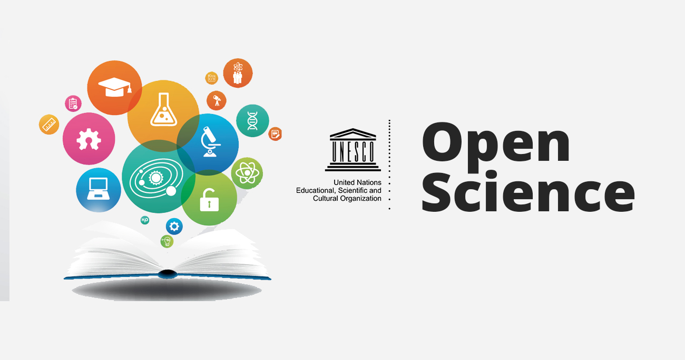

Prof. Dr. Edson OliveiraJr
I am associate professor of Software Engineering and Digital Forensics at the State University of Maringá (UEM), Maringá, Paraná, Brazil, since Aug. 2011.
I did a 18-month postdoctoral in Experimentation in Digital Forensics (2018-2020) and a 6-month Sabbatical in Digital Forensics Education and Training (2022) at the Pontifical Catholic University of Rio Grande do Sul.
I hold a Ph.D. in Computer Science (2010) from the University of São Paulo (ICMC-USP), Brazil, at the LabES group. I was a visitor scholar (doctoral sandwich) at the Star Group of the University of Waterloo (UW), Ontario, Canada in 2009, during my Ph.D.
My Master's (2005) and Bachelor's (2002) degrees in Computer Science are from the State University of Maringá.
My research interests include:
- Software Reuse with Software Product Lines; Variability Management; Model-driven Engineering; UML and Metamodeling; and Software Process Lines;
- Software Architecture, Reference Architectures, and Evaluation;
- Software Quality, Metrics and Meaures;
- Software Engineering Controlled Experiments, registered reports, ontologies, and education;
- Education in Software Engineering;
- Open Science for Software Engineering Research: preservation, provenance, curation, transparency; and research integrity;
- Evidence-based Digital Forensics and Controlled Experimentation;
- Reference Architectures for Digital Forensics Tools;
- Digital Forensics Feminicide Perspective;
- Digital Forensics Education and Training;
- Open Science for Digital Forensics Research;
- Open Science Education and Training.
I am:
- an Open Science advocator! 
- a member of the Brazilian Computer Science Society (SBC)
- a member of the Brazilian Forensics Science Society (SBCF)
- a member of the ACM and SIGSOFT (#1783962)
- a CNPq/Brazil Level 2 Researcher (PQ-2)
- the Multidisciplinary Coordinator of the Forensic Sciences Technical Residency (UEM/SETI/Scientific Police of Paraná)
- a consultant of the Technology Innovation Committee (NIT/UEM)
- a PCI Registered Report Recommender
- Professionally Certified: SCJP, SCJD, SCWCD, SCJA, SCBCD
Contact and Refs.
E-mail: edson at din.uem.br, oliveirajr at sigsoft.org
DBLP: https://dblp.org/pid/04/2051.html
ORCiD: 0000-0002-4760-1626
Google Scholar: https://scholar.google.com/citations?user=71vteVgAAAAJ
 @EdsonOliveiraJ6
@EdsonOliveiraJ6